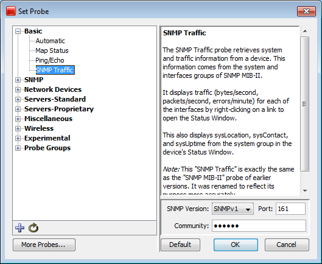

Probe Reference Overview
Probe Reference
Use the Probe Picker window to choose the probe you want to use to query
the device.

Set Probe Window
Using the Probe Selection Window
- Click plus (+) in the left pane to expand a probe
group.
- Click minus (-) in the left pane to collapse a probe
group.
- Click a probe in the left pane to choose the probe.
Information about the probe and controls for setting any available parameters
appear in the right frame.
- Click Default to set the probe back
to default setting for that probe type.
About the Probes
InterMapper comes with a large number of built-in probes. For a full index and detailed descriptions of built-in probes, see the Probe Index.
- Basic
Probes - use the Basic probes to cover the majority of your
needs for probing devices.
- SNMP Probes- use the SNMP probes to perform a wide variety of queries
on SNMP devices.
- Network
Devices
- Use the network device probes to query network devices, such as routers, switches and UPS units.
- PowerShell Probes(Pg 1) - Use these probes to get information from Windows machines using PowerShell scripts.
- Servers-Standard
- use these probes to query various devices using one of many Standard
protocols.
- Servers-Proprietary
- use these probes to query various devices using one of many Proprietary
protocols.
- Miscellaneous
Probes
- use these probes for a variety of uses. You can find
the Demo, Non-Polling, and TCP Check probes. You can also find the Legacy
probes (included to support older maps) and the template for developing
Nagios and Command-line probes.
- Wireless Probes - Use these probes to get vendor-specific information from a number of wireless devices.
- WMI Probes - If InterMapper is installed on a Windows machine, use these probes to get detailed information from Windows workstations through the Windows Management Instrumentation (WMI) interface.
Packet-based probes
Probes such as "Ping/Echo", "SNMP Traffic", "NNTP"
and "RADIUS" send UDP packets to the device being
tested and await a correctly formatted response.
Probe timeout period
The timeout period for waiting is configured by choosing Set Timeout
from the Set Probe Info submenu. If no response is received within the
timeout period, InterMapper tries again by sending another request packet.
This process is repeated until either a response is received, or the number
of requests sent exceeds the "Number of Lost Packets" threshold
set for the map (a default of 3).
Response packet integrity
All packet-based probes check the integrity of the response they receive,
and some can set the status of the device (Alarm, Warning,
or OK) based on the severity of a problem.
TCP-based probes
Probes like "HTTP", "SMTP", and "LDAP"
and others test the ability of a server to accept a TCP connection on
a specific listening port, and to respond to a scripted interchange.
What happens in a TCP-based interchange
- InterMapper first attempts to connect to the specified
port at the device's address.
-
If this connection attempt fails, InterMapper shows
the device in the DOWN state.
If InterMapper successfully connects to the listening port, InterMapper
sends protocol-specific commands through the TCP connection to test the
server's responses and compare them to expected values.
-
InterMapper changes the status of the device (e.g.
ALARM, WARNING, OKAY, DOWN) if an error condition is detected, or if the
execution of InterMapper's probe is interrupted for any reason.
- If InterMapper doesn't receive a proper response
for 60 seconds, or if the TCP connection is lost while waiting for a response,
the InterMapper probe will set status of the device to the proper condition.
Miscellaneous Probes
InterMapper has several "miscellaneous probes", described
briefly below. They are described in detail in Miscellaneous
Probes.
- Demo probe - Use
this probe to create demonstration maps, which simulate a network and
its activity.
- Legacy probes -
These probes that have been superceded by other probes. They are included
to support older maps.
- Nagios
- Use the
Nagios probe type to select plugins from the Nagios monitoring system.
InterMapper can use these plugins to test devices. For more details, see
the Nagios Plugins page in the Developer Guide.
- Non-polling probe
- Choose this probe so that the selected device is not probed.
- Prototype SNMP probe - Use this probe as the basis for creating custom SNMP probes.
- TCP Check probe
- Use this probe to monitor the number of TCP connections to an SNMP-enabled
device and to send an alarm when a specified number of connections is exceeded.
Troubleshooting PowerShell Probes
If you are having trouble getting PowerShell probes to work, you can look in the Debug Log information.
Each time a PowerShell probe is chosen or its parameters change, a connectivity test is run. If the test is successful, the probe runs at the next polling interval. For the connectivity test, and for each time a PowerShell probe runs, two entries are created:
- One entry shows the input string sent to stdin.
- A second entry shows the variables returned by the probe, enclosed in "\{...}", followed by the string assigned to stdout.